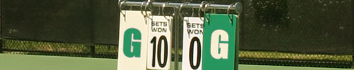

Good game… or maybe not?

It’s Saturday, raining and definitely time for a quick rant: Hasn’t it ever bothered you that some people write “gg” after every godforsaken game, regardless of how the game went or what the result ended up to be?
People for some mysterious reason always compare QuakeWorld to tennis, where you walk to the net after the game and shake hands. Well I have revolutionary news for you: QuakeWorld and tennis have as much in common as QuakeWorld and getting laid. “But they’re both competitive sports” is what gg-sayers claim in their defense. Yawn.
The last time I ever saw someone lag or drop in tennis was… ermm… oh wait: NEVER?! And when do “tennis-noobs” ever get bashed to pulp by really experienced players. What are tennis equivalents to “full start” and ping? I’m really having problems picturing this grotesque and clumsy comparison.
In my couple of years active in the QuakeWorld scene I have seen the most pathetic attempts to sportsmanship. I’ve seen people write “gg” even if their opposing team had to play 3on4 for almost the entire 20 minutes, or their opponent was lagging throughout the entire game, or fake-nicking people writing “gg” after they just beat a new player 55:0. When confronting the players and asking ‘Err… so why gg?” people in most cases reply something along the lines of “Dunno, I always say it” or “Because I played well”. Holy shit, now that’s really a great and meaningful gesture and a sincere appreciation of the opponent’s gameplay!
So I ask myself: When exactly did sportsmanship get reduced to a meaningless, redundant 2-character abbreviation that you just “always say”? And if people always say it, don’t actually mean it, but feel the urge to say something insincere, then why don’t they stick to “Manamana… do doo dododooo” instead? It would symbolise their boundless sportsmanship just as much!
So what I suggest is the following: If you didn’t really think the game was good, shut the hell up. If your opponent impressed you, complement him on what impressed you specifically. If you just completely trashed some guy that only recently switched to QuakeWorld, then perhaps invest 2 minutes of your time in giving some tips & tricks. The ethical revolution is just a gib away.
P.S.: Where do you stand on this? Write a comment to give me your personal rant.
this was vgg, man, best article about gaming that i readed in ages. nice job!